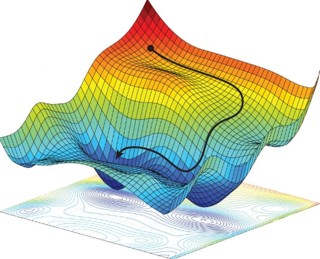
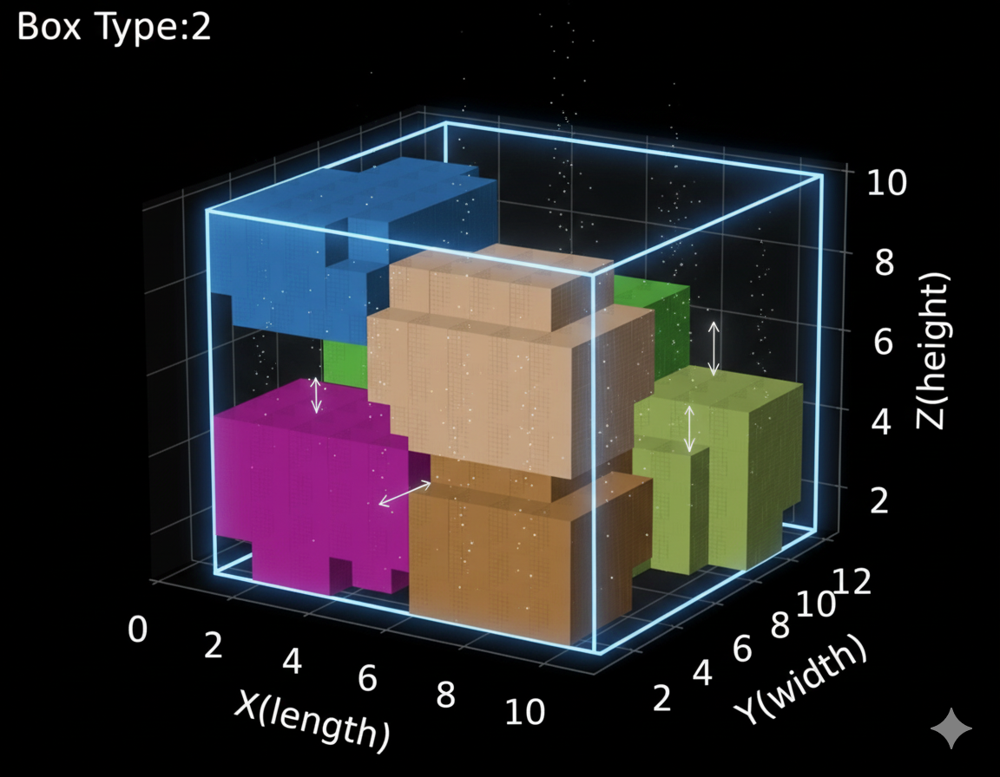
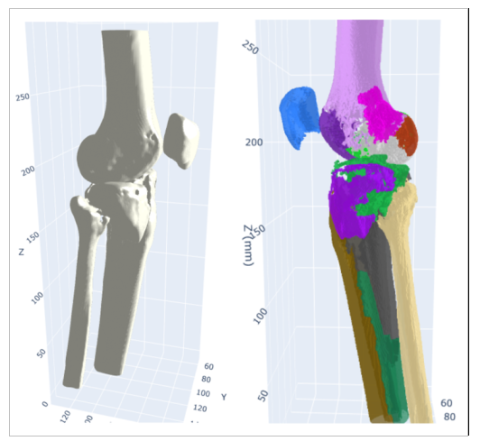

Image courtesy: Medium.com
Theoretical and computational advances in mixed-integer nonlinear optimization: Development of the open-source solver Minotaur
Prashant Palkar, Meenarli Sharma, Kishan, Nayan Kumar
Abstract
This project focuses on the development of Minotaur, an open-source solver for tackling mixed-integer nonlinear programming (MINLP) problems. The research addresses both theoretical modeling and algorithmic advancements to efficiently solve large-scale instances arising in engineering and scientific applications.
Keywords:
MINLP
Optimization
Open-source
Nonlinear

Image courtesy: https://okcredit.in/
Precision Timetabling for Indian Railways
Prashant Palkar, Varun Ramamohan, Apurv Negi and CRIS team
Abstract
This project develops an AI-driven railway timetabling tool in collaboration with CRIS, combining optimization and ML
to model scheduling constraints, accommodate new requirements, and enhance punctuality while minimizing disruptions.
It optimizes key metrics like service consolidation and freight capacity using advanced algorithms and parallel computing.
Keywords:
Scheduling
Optimization
AI/ML
Constraint Programming

Three-Dimensional Packing Optimization
Prashant Palkar, Amber Srivastava, Aniket Mandavkar, Harshit Lohar, and Thermo Fisher team
Abstract
This project addresses Thermofisher Scientific's 3D packaging optimization challenge by developing a cluster-then-optimize
approach for packing SKUs within a set of double-folded cartons. The approach consists of formulating the problem as a Mixed
Integer Linear Program (MILP) and solving via a cluster-then-optimize heuristic that scales well for and outperforms
manual methods and existing benchmarks.
Keywords:
MILP
Clustering
Bin-Packing

An Optimization and AI-Driven Decision-Support Platform for Preoperative Planning of High-Impact Surgeries
Prashant Palkar, Dr. Lalit Maini, Dr. Amit Tyagi, Shubhang Pant, and MAMC Orthopaedics team
Abstract
Accurate preoperative planning is central to the success of complex orthopedic surgeries, which require precise
anatomical understanding, correct implant sizing, and optimal placement to ensure stability and long-term function. This project is aimed at creating
a scalable, clinically viable, and cost-effective platform that transforms the planning of complex
Orthopedic surgeries via integration of AI and optimization. It will reduce planning and intraoperative time, improve consistency and accuracy
in implant placement, lower complication and revision rates, and enable broader access to high-quality
surgical planning across diverse clinical settings.
Keywords:
AI/ML
Preoperative Planning
Image Processing

Incident Prediction Model for Indian Railways
Minakshi Kumari, CRIS team
Abstract
Averting undesirable incidents has always been one of the main performance criteria for the Indian Railways. The goal is to ensure passenger safety and provide a safe working environment for the drivers. Despite its willingness to operate in an accident-free mode, mishaps happen and have led to serious loss in terms of lives and resources. We are working with CRIS to develop a prediction model for mechanical failures that can be identified as undesirable incidents.
Keywords:
MILP
AI/ML
Predictive Analytics
Incident Prediction
Image courtesy:
Dynamic Pricing of Freight(Cement) for Indian Railways
Amber Srivastava, Prashant Palkar, Apurv Negi and CRIS team
Abstract
This project develops a dynamic pricing framework for cement freight in Indian Railways to encourage a modal shift from road to rail. The model integrates optimization and machine learning to adjust tariffs based on demand, distance, and operational factors. It aims to maximize railway revenue while offering competitive rates to shippers. The outcome promotes efficiency, cost reduction, and sustainable freight transport.
Keywords:
Optimization
AI/ML
Dynamic Pricing

Image courtesy: Suzuki India Foundation
Increasing Competitiveness of Manufacturing in Select Indian States: A Case of Haryana State
Abstract
India's manufacturing landscape is characterised by regional diversity, with several states emerging as industrial powerhouses due to infrastructure, policy support, and skilled labor availability. This project examines Haryana’s manufacturing competitiveness, focusing on challenges faced by small and medium enterprises, policy gaps, and industrial dynamics. The study aims to provide actionable insights for policymakers, investors, and business leaders to implement targeted reforms, encourage balanced regional growth, and enhance Haryana’s role in India’s industrial ecosystem.
Keywords:
Manufacturing
Policy
SMEs
Industrial Growth

Image courtesy: DSIR, New Delhi
Techno-commercial Assessment of TRL-6 and Above Technologies Developed in India in Academia, Research Labs and Industry
Collaborating Institute: IIT Jammu
Minakshi Kumari
Abstract
In India, there are limited studies on technology readiness assessment, despite its critical role in bridging the gap between academic research and industrial commercialization. Many innovations fall into the "valley of death," particularly between TRLs 4–7, where resources are scarce. This project evaluates TRL-6 and above technologies developed in academia, research labs, and industry to identify key success factors and challenges. The study provides valuable insights for strengthening technology incubation, supporting innovators, and promoting successful commercialization journeys in the Indian scientific landscape.
Keywords:
Technology Readiness Level
TRL Assessment
Commercialization
Innovation